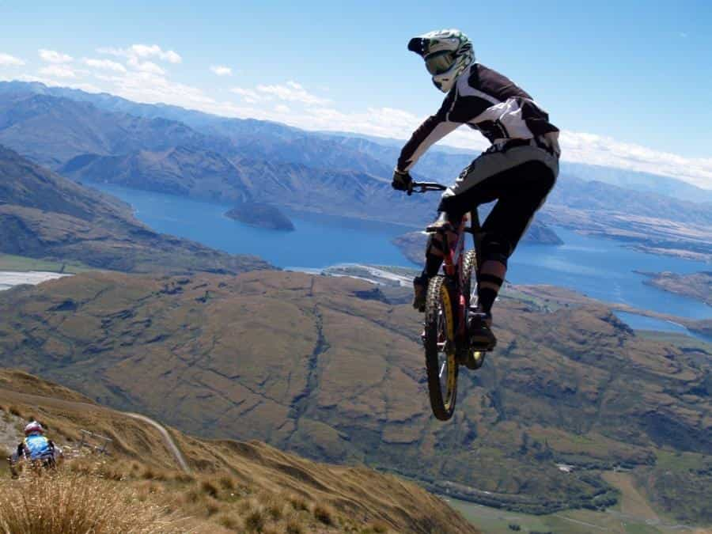
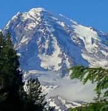

< < < Back
Why Becoming An Adventure Guide Is One Of The Best Jobs A Man Could Have – Return Of Kings
Maybe you’re twenty-something years old and you don’t like yourself. You don’t know jack shit, you haven’t got any money or prospects, you can’t get girls, you’re unfit and unhealthy, and you’re stuck in a rut. What’s worse is that you can’t see a way out, and you’re pretty sure that it’s you; you’re a loser and all the successful guys you see never had it as tough as you.
And you’d be wrong. The vast majority of us have been there, but very few bothered to make the most of those shitty times. You have few recognizable options. You could go to college and study some worthless degree while paying through the nose for doing so, all the while hoping that you’ll just luck into some dream job when you finish. But you know enough by now to realize that college is just a dead end to nowhere. You could get a trade, (which I actually think is an excellent option), but you’re no good with your hands and you don’t relish the thought of soldering electrical wires for the rest of your life.
I was where you are right now. And I lucked upon one of the greatest ways to get paid and see the world while having the time of your life; working as an adventure guide. For fifteen years I traveled the world from Australia, to Canada, Africa, and Europe, while I worked as a whitewater rafting instructor. My peers became friends for life, I got paid to go to places that regular people pay eye-watering amounts of cash to get to, and I learned numerous skills that I have put to use in other jobs to great effect. And we got a hell of a lot of tail.
And it doesn’t have to be rafting. You could be a SCUBA instructor, a climbing guide, a sea kayaking guide, a canyoning guide, a mountain bike guide, a ski instructor, the list goes on and on. You work in the great outdoors in some of the most beautiful places on the planet, your daily commute does not involve public transport, and you live and work in some of the biggest party zones in the world.
Surely this is hard to get into

So now you’re sitting upright. You’re wondering what you have to do to get in on this action. You’re thinking that it must be blindingly hard to get one of these jobs; that people are lining up by the bucket-load to work in these industries.
Well, they’re always hiring, and they’re always looking for people to work for…not that much really.
And there’s the catch. The money is usually pretty lousy. In some locations I did make decent coin, but a lot of the time we were doing it for the love of the job. That translates to, “the love of the lifestyle.” And as I’ve tried to stress so far, the lifestyle is pretty bloody awesome.
This might turn you off, but think about it: right now your only option is to go heavily into debt for a useless college degree that you will hate. I’m offering you the chance to travel the world, get meaningful life skills, meet loads of girls, and get a really great tan. And you will make some money; just enough to get you a plane ticket to your next destination.
So what’s the best way to go about it?

First, you need to get some basic skills in the discipline you hope to instruct. For example, if you want to be a rafting guide it would be a fantastic idea to learn how to whitewater kayak, which indecently is a macho sport that is great fun and healthy too. Find a club in your area, buy some second-hand gear, and get really good at it. By doing that you will make contacts, and through these contacts you will see doors start to open as possibilities and options emerge.
Isn’t that what we were talking about at the start of this piece? A lack of options?
Back to your new career. Often you’re offered a crappy job at this disreputable sounding outfit where you will be alternating between washing dishes and driving shuttle vehicles to the river. Take the damn job. When you get there you need to do a few things.
1. Work really hard.
2. Network, network, network.
3. Paddle your kayak only when you don’t have an opportunity to sit in a raft (you wanted to become a rafting guide, right?)
4. Get on with the team and be humble.
Number four is the most important. At this stage in your budding guiding career, your knowledge is less than zero. You will be surrounded by skilled and confident professionals. You will inevitably feel insecure. You may well be very tempted to talk yourself up so you can compete on an equal level with your colleagues.
Don’t, whatever you do, don’t do this. They know you don’t know shit. It’s okay, really it is. Just keep your head down, ask questions, actually listen to what people tell you, take constructive criticism well even if you don’t agree with it, and be humble.
Do you see what I mean about learning actual life skills? Getting on with the people you work with and being a valuable and contributing member of the team is what most of the dumb-shits coming out of college are missing. It’s the number one skill that employers want, (that and turning up on time and not stealing).
It might take you a season or two, but eventually you’ll get to the point where you’re in charge of your own raft. It’s like being a little mini-captain with your own passengers. They’ll want to hear your jokes, they’ll be depending on you to get them safely down the river, and you’ll suddenly be living the dream.
Side Benefits
I left the best part of this until last. Do you go to the gym and see all those middle-aged fat guys desperately working out in an effort to reverse the tide? And you know just by looking at them that it’s never going to happen. Because the fitness level that you obtain and keep in your twenties and early thirties is what you’ll be able to reach for the rest of your life.
Being an adventure guide gets you in really great shape. Really amazingly great shape. I stopped rafting over five years ago, and I haven’t really done that much exercise since then. I’m 44 years old and people ask me how much I work out. I never work out, but fifteen years of pushing a raft down a river gets you an amazing base fitness level.
Then of course there are the girls. Your frame will revolve around being an adventurer, world traveler, and rugged outdoors man. Women on holiday want to have a story to take back to work; they need to recount a juicy tale around the coffee machine. You will be the juicy tale.
If I had to return in time, back to my clueless twenty-year-old self, I would do it all over again. The years I spent guiding shaped my personality and made me the person that I am today. The question you need to ask yourself is, what sort of person do I want to be tomorrow?
Read More: The Greatest Adventure


{kind=link}
{kind=link}
{kind=link}